项目资源管理
项目资源管理包括识别、获取和管理所需资源以成功完成项目的各个过程，这些过程有助于确保项目经理和项目团队在正确的时间和地点使用正确的资源。
项目资源管理过程包括：
9.1 规划资源管理 — 定义如何估算、获取、管理和利用实物以及团队项目资源的过程。
9.2 估算活动资源 — 估算执行项目所需的团队资源，以及材料、设备和用品的类型和数量的过程。
9.3 获取资源 — 获取项目所需的团队成员、设施、设备、材料、用品和其他资源的过程。
9.4 建设团队 — 提高工作能力，促进团队成员互动，改善团队整体氛围，以提高项目绩效的过程。
9.5 管理团队 — 跟踪团队成员工作表现，提供反馈，解决问题并管理团队变更，以优化项目绩效的过程。
9.6 控制资源 — 确保按计划为项目分配实物资源，以及根据资源使用计划监督资源实际使用情况，并采取必要纠正措施的过程。
图 9-1 概括了项目资源管理的各个过程。虽然在本《PMBOK® 指南》中，各项目资源管理过程以界限分明和相互独立的形式出现，但在实践中它们会以本指南无法全面详述的方式相互交叠和相互作用。
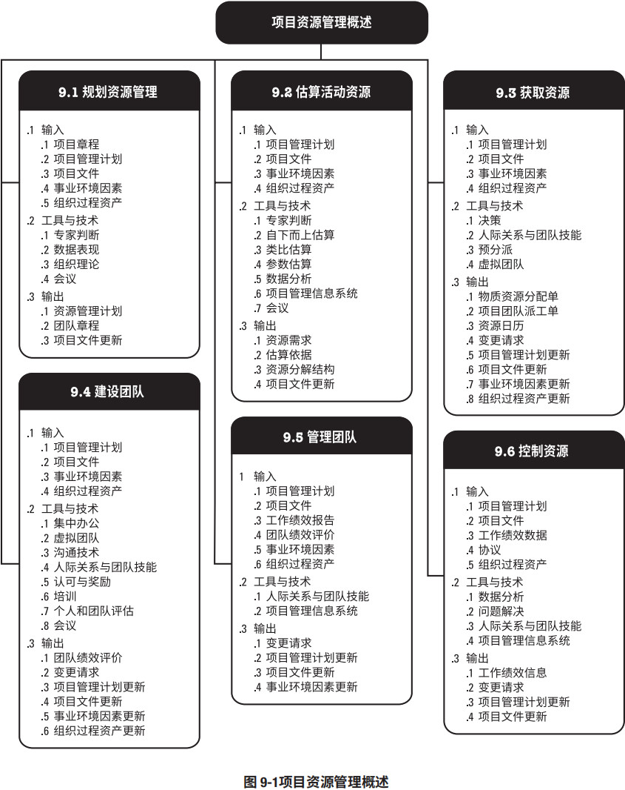
团队资源管理相对于实物资源管理，对项目经理提出了不同的技能和能力要求。实物资源包括设备、材料、设施和基础设施，而团队资源或人员指的是人力资源。项目团队成员可能具备不同的技能，可能是全职或兼职的，可能随项目进展而增加或减少。项目资源管理与项目相关方管理之间有重叠的部分（见 13 节），本节（第 9 节）则重点关注组成项目团队的部分相关方。
项目资源管理的核心概念
项目团队由承担特定角色和职责的个人组成，他们为实现项目目标而共同努力。项目经理因此应在获取、管理、激励和增强项目团队方面投入适当的努力。尽管项目团队成员被分派了特定的角色和职责，但让他们全员参与项目规划和决策仍是有益的。团队成员参与规划阶段，既可使他们对项目规划工作贡献专业技能，又可以增强他们对项目的责任感。
项目经理既是项目团队的领导者又是项目团队的管理者。除了项目管理活动，例如启动、规划、执行、监控和关闭各个项目阶段，项目经理还负责建设高效的团队。项目经理应留意能够影响团队的不同因素，例如：
- 团队环境；
- 团队成员的地理位置；
- 相关方之间的沟通；
- 组织变更管理；
- 内外部政治氛围；
- 文化问题和组织的独特性；
- 其他可能改变项目绩效的因素。
作为领导者，项目经理还负责积极培养团队技能和能力，同时提高并保持团队的满意度和积极性，项目经理还应留意并支持职业与道德行为，确保所有团队成员都遵守这些行为。
实物资源管理着眼于以有效和高效的方式，分配和使用成功完成项目所需的实物资源，如材料、设备和用品。为此，组织应当拥有如下数据：（当前和合理的未来的）资源需求、（可以满足这些 需求的）资源配置，以及资源供应。不能有效管理和控制资源是项目成功完成的风险来源。例如：
- 未能确保关键设备或基础设施按时到位，可能会推迟最终产品的制造；
- 订购低质量材料可能会损害产品质量，导致大量召回或返工；
- 保存太多库存可能会导致高运营成本，使组织盈利下降；另一方面，如果库存量太低，就可能无法满足客户需求，同样会造成组织盈利下降。
项目资源管理的趋势和新兴实践
项目管理风格正在从管理项目的命令和控制结构，转向更加协作和支持性的管理方法，通过将决策权分配给团队成员来提高团队能力。此外，现代的项目资源管理方法致力于寻求优化资源使用。有关项目资源管理的趋势和新兴实践包括（但不限于）：
- 资源管理方法。过去几年，由于关键资源稀缺，在某些行业中出现了一些普遍的趋势，涌现出很多关于精益管理、准时制 (JIT) 生产、Kaizen（持续改善）、全员生产维护 (TPM)、约束理论等方法的文献资料。项目经理应确定执行组织是否采用了一种或多种资源管理工具，从而对项目做出相应的调整。
- 情商 (EI)。项目经理应提升内在（如自我管理和自我意识）和外在（如关系管理）能力，从而提高个人情商。研究表明，提高项目团队的情商或情绪能力可提高团队效率，还可以降低团队成员离职率。
- 自组织团队。随着敏捷方法在 IT 项目中的应用越来越普遍，自组织团队（无需集中管控运作）越来越多。对于拥有自组织团队的项目，“项目经理”（可能不称为“项目经理”）的角色主要是为团队创造环境、提供支持并信任团队可以完成工作。成功的自组织团队通常由通用的专才而不是主题专家组成，他们能够不断适应变化的环境并采纳建设性反馈。
- 虚拟团队/分布式团队。项目全球化推动了对虚拟团队的需求的增长。这些团队成员致力于同一个项目，却分布在不同的地方。沟通技术（如电子邮件、电话会议、社交媒体、网络会议和视频会议等）的使用，使虚拟团队变得可行。虚拟团队管理有独特的优势，例如能够利用项目团队的专业技术，即使相应的专家不在同一地理区域；将在家办公的员工纳入团队；以及将行动不便者或残疾人纳入团队。而虚拟团队管理面临的挑战主要在于沟通，包括可能产生孤立感、团队成员之间难以分享知识和经验、难以跟进进度和生产率，以及可能存在时区和文化差异。
裁剪考虑因素
由于每个项目都是独特的，项目经理需要裁剪项目资源管理过程。裁剪时应考虑的因素包括（但不限于）：
- 多元化。团队的多元化背景是什么？
- 物理位置。团队成员和实物资源的物理位置在哪里？
- 行业特定资源。所在行业需要哪些特殊资源？
- 团队成员的获得。如何获得项目团队成员？项目团队资源是全职还是兼职？
- 团队管理。如何管理项目团队建设？组织是否有管理团队建设的工具或是否需要创建新工具？是否存在有特殊需求的团队成员？是否需要为团队提供有关多元化管理的特别培训？
- 生命周期方法。项目采用哪些生命周期方法？
在敏捷或适应型环境中需要考虑的因素
易变性高的项目得益于最大限度地集中和协作的团队结构，例如拥有通才的自组织团队。
协作旨在提高生产率和促进创新的问题解决方式。协作型团队可以促进不同工作活动的加速整合、改善沟通、增加知识分享，以及提供工作分配的灵活性和其他优势。
虽然协作的优势也适用于其他项目环境，协作型团队对于易变性高且快速变化的项目成功而言通常是至关重要的，因为集中分配任务和决策所需的时间更少。
对于易变性高的项目，实物和人力资源规划的可预测性要低得多。在这些环境中，关于快速供应和精益方法的协议，对控制成本和实现进度而言至关重要。
9.1 规划资源管理
规划资源管理是定义如何估算、获取、管理和利用团队以及实物资源的过程。本过程的主要作用是，根据项目类型和复杂程度确定适用于项目资源的管理方法和管理程度。本过程仅开展一次或仅在项目的预定义点开展。图 9-2 描述本过程的输入、工具与技术和输出。图 9-3 是本过程的数据流向图。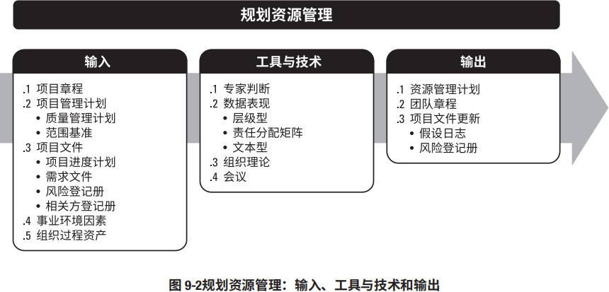
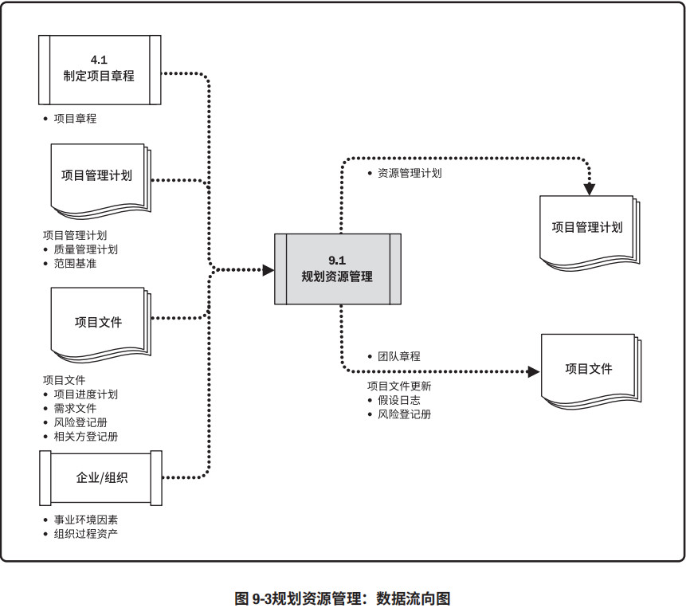
资源规划用于确定和识别一种方法，以确保项目的成功完成有足够的可用资源。项目资源可能包括团队成员、用品、材料、设备、服务和设施。有效的资源规划需要考虑稀缺资源的可用性和竞争，并编制相应的计划。
这些资源可以从组织内部资产获得，或者通过采购过程从组织外部获取。其他项目可能在同一时间和地点竞争项目所需的相同资源，从而对项目成本、进度、风险、质量和其他项目领域造成显著影响。
9.1.1 规划资源管理：输入
9.1.1.1 项目章程
见 4.1.3.1 节。项目章程提供项目的高层级描述和要求，此外还包括可能影响项目资源管理的关键相关方名单、里程碑概况，以及预先批准的财务资源。9.1.1.2 项目管理计划
见 4.2.3.1 节。项目管理计划组件包括（但不限于）：- 质量管理计划。见 8.1.3.1 节。质量管理计划有助于定义项目所需的资源水平，以实现和维护已定义的质量水平并达到项目测量指标。
- 范围基准。见 5.4.3.1 节。范围基准识别了可交付成果，决定了需要管理的资源的类型和数量。
9.1.1.3 项目文件
可作为本过程输入的项目文件包括（但不限于）：- 项目进度计划。见 6.5.3.2 节。项目进度计划提供了所需资源的时间轴。
- 需求文件。见 5.2.3.1 节。需求文件指出了项目所需的资源的类型和数量，并可能影响管理资源的方式。
- 风险登记册。见 11.2.3.1 节。风险登记册包含可能影响资源规划的各种威胁和机会的信息。
- 相关方登记册。见 13.1.3.1 节。相关方登记册有助于识别对项目所需资源有特别兴趣或影响的那些相关方，以及会影响资源使用偏好的相关方。
9.1.1.4 事业环境因素
能够影响规划资源管理过程的事业环境因素包括（但不限于）：- 组织文化和结构；
- 设施和资源的地理分布；
- 现有资源的能力和可用性；
- 市场条件。
9.1.1.5 组织过程资产
能够影响规划资源管理过程的组织过程资产包括（但不限于）：- 人力资源政策和程序；
- 物质资源管理政策和程序；
- 安全政策；
- 安保政策；
- 资源管理计划模板；
- 类似项目的历史信息。
9.1.2 规划资源管理：工具与技术
9.1.2.1 专家判断
见 4.1.2.1 节。应征求具备以下专业知识或接受过相关培训的个人或小组的意见：- 协调组织内部的最佳资源；
- 人才管理和员工发展；
- 确定为实现项目目标所需的初步投入水平；
- 根据组织文化确定报告要求；
- 根据经验教训和市场条件，评估获取资源所需的提前量；
- 识别与资源获取、留用和遣散计划有关的风险；
- 遵循适用的政府和工会法规；
- 管理卖方和物流工作，确保在需要时能够提供材料和用品。
9.1.2.2 数据表现
适用于本过程的数据表现技术包括（但不限于）图表。数据表现有多种格式来记录和阐明团队成员的角色与职责。大多数格式属于层级型、矩阵型或文本型。有些项目人员安排可以在子计划（如风险、质量或沟通管理计划）中列出。无论使用什么方法来记录团队成员的角色，目的都是要确保每个工作包都有明确的责任人，确保全体团队成员都清楚地理解其角色和职责。层级型可用于表示高层级角色，而文本型则更适合用于记录详细职责。层级型
可以采用传统的组织结构图，自上而下地显示各种职位及其相互关系。
- 工作分解结构 (WBS)。WBS 用来显示如何把项目可交付成果分解为工作包，有助于明确高层级的职责。
- 组织分解结构 (OBS)。WBS 显示项目可交付成果的分解，而 OBS 则按照组织现有的部门、单元或团队排列，并在每个部门下列出项目活动或工作包。运营部门（如信息技术部或采购部）只需要找到其所在的 OBS 位置，就能看到自己的全部项目职责。
- 资源分解结构。资源分解结构是按资源类别和类型，对团队和实物资源的层级列表，用于规划、管理和控制项目工作。每向下一个层次都代表对资源的更详细描述，直到信息细到可以与工作分解结构（WBS）相结合，用来规划和监控项目工作。
责任分配矩阵
责任分配矩阵展示项目资源在各个工作包中的任务分配。矩阵型图表的一个例子是职责分配矩阵(RAM)，它显示了分配给每个工作包的项目资源，用于说明工作包或活动与项目团队成员之间的关系。在大型项目中，可以制定多个层次的 RAM。例如，高层次的RAM 可定义项目团队、小组或部门负责 WBS 中的哪部分工作，而低层次的 RAM 则可在各小组内为具体活动分配角色、职责和职权。矩阵图能反映与每个人相关的所有活动，以及与每项活动相关的所有人员，它也可确保任何一项任务都只有一个人负责，从而避免职权不清。RAM 的一个例子是 RACI（执行、负责、咨询和知情）矩阵，如图 9-4 所示。图中最左边的一列表示有待完成的工作（活动）。分配给每项工作的资源可以是个人或小组，项目经理也可根据项目需要，选择“领导”或“资源”等适用词汇，来分配项目责任。如果团队是由内部和外部人员组成，RACI 矩阵对明确划分角色和职责特别有用。
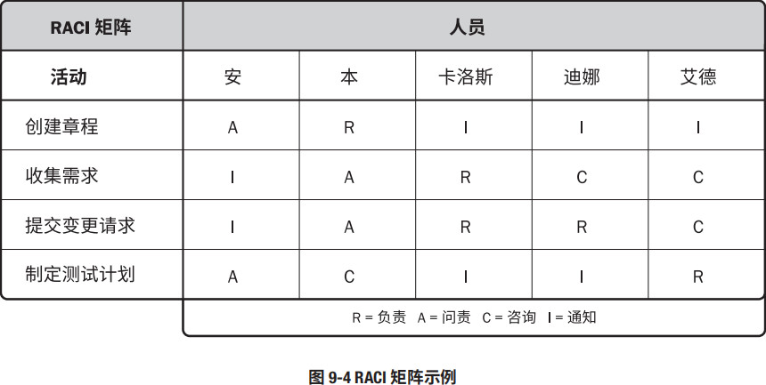
文本型
如果需要详细描述团队成员的职责，就可以采用文本型。文本型文件通常以概述的形式，提供诸如职责、职权、能力和资格等方面的信息。这种文件有多种名称，如职位描述、角色 — 职责 — 职权表，该文件可作为未来项目的模板，特别是在根据当前项目的经验教训对其内容进行更新之后。
9.1.2.3 组织理论
组织理论阐述个人、团队和组织部门的行为方式。有效利用组织理论中的常用技术，可以节约规划资源管理过程的时间、成本及人力投入，提高规划工作的效率。此外，可以根据相关的组织理论灵活使用领导风格，以适应项目生命周期中团队成熟度的变化。重要的是要认识到，组织的结构和文化影响项目组织结构。9.1.2.4 会议
项目团队可召开会议来规划项目资源管理。9.1.3 规划资源管理：输出
9.1.3.1 资源管理计划
作为项目管理计划的一部分，资源管理计划提供了关于如何分类、分配、管理和释放项目资源的指南。资源管理计划可以根据项目的具体情况分为团队管理计划和实物资源管理计划。资源管理计划可能包括（但不限于）：- 识别资源。用于识别和量化项目所需的团队和实物资源的方法。
- 获取资源。关于如何获取项目所需的团队和实物资源的指南。
- 角色与职责。
- 角色。在项目中，某人承担的职务或分配给某人的职务，如土木工程师、商业分析师和测试协调员。
- 职权。使用项目资源、做出决策、签字批准、验收可交付成果并影响他人开展项目工作的权力。例如，下列事项都需要由具有明确职权的人来做决策：选择活动的实施方法，质量验收标准，以及如何应对项目偏差等。当个人的职权水平与职责相匹配时，团队成员就能最好地开展工作。
- 职责。为完成项目活动，项目团队成员必须履行的职责和工作。
- 能力。为完成项目活动，项目团队成员需具备的技能和才干。如果项目团队成员不具备所需的能力，就不能有效地履行职责。一旦发现成员的能力与职责不匹配，就应主动采取措施，如安排培训、招募新成员、调整进度计划或工作范围。
- 项目组织图。项目组织图以图形方式展示项目团队成员及其报告关系。基于项目的需要，项目组织图可以是正式或非正式的，非常详细或高度概括的。例如，一个 3000 人的灾害应急团队的项目组织图，要比仅有 20 人的内部项目的组织图详尽得多。
- 项目团队资源管理。关于如何定义、配备、管理和最终遣散项目团队资源的指南。
- 培训。针对项目成员的培训策略。
- 团队建设。建设项目团队的方法。
- 资源控制。依据需要确保实物资源充足可用、并为项目需求优化实物资源采购，而采用的方法。包括有关整个项目生命周期期间的库存、设备和用品管理的信息。
- 认可计划。将给予团队成员哪些认可和奖励，以及何时给予。
9.1.3.2 团队章程
团队章程是为团队创建团队价值观、共识和工作指南的文件。团队章程可能包括（但不限于）：- 团队价值观；
- 沟通指南；
- 决策标准和过程；
- 冲突处理过程；
- 会议指南；
- 团队共识。
团队章程对项目团队成员的可接受行为确定了明确的期望。尽早认可并遵守明确的规则，有助于减少误解，提高生产力；讨论诸如行为规范、沟通、决策、会议礼仪等领域，团队成员可以了解彼此重要的价值观。由团队制定或参与制定的团队章程可发挥最佳效果。所有项目团队成员都分担责任，确保遵守团队章程中规定的规则。可定期审查和更新团队章程，确保团队始终了解团队基本规则，并指导新成员融入团队。
9.1.3.3 项目文件更新
可在本过程更新的项目文件包括（但不限于）：- 假设日志。见 4.1.3.2 节。更新假设日志时可增加关于实物资源的可用性、物流要求和位置信息以及团队资源的技能集和可用性的假设条件。
- 风险登记册。见 11.2.3.1 节。关于团队和实物资源可用性的风险，以及其他已知资源的相关风险，更新在风险登记册中。
9.2 估算活动资源
估算活动资源是估算执行项目所需的团队资源，以及材料、设备和用品的类型和数量的过程。本过程的主要作用是，明确完成项目所需的资源种类、数量和特性。本过程应根据需要在整个项目期间定期开展。图 9-5 描述本过程的输入、工具与技术和输出，图 9-6 是本过程的数据流向图。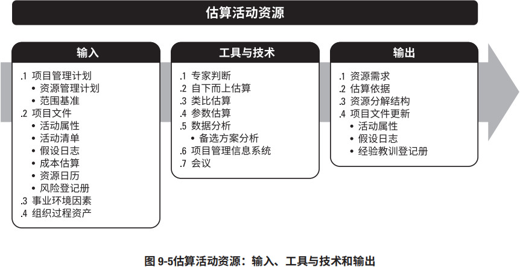
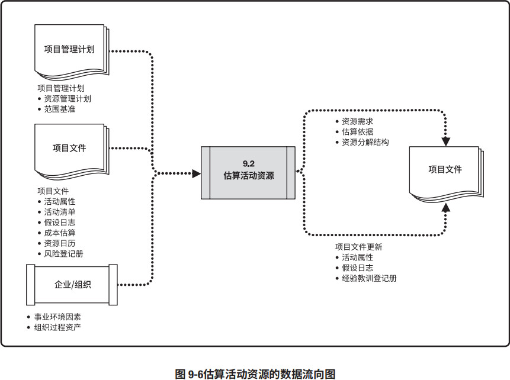
估算活动资源过程与其他过程紧密相关，例如估算成本过程。例如：
- 建筑项目团队需要熟悉当地建筑法规。这类知识常可从当地卖方获取，但是，如果内部劳动力资源对不常用或专门的建筑技术缺乏经验，那么支付额外费用聘请咨询专家，可能就是了解当地建筑法规的最有效的方法。
- 汽车设计团队需要熟悉最新的自动装配技术。这些必要的知识可以通过聘请顾问、派设计人员参加机器人技术研讨会，或者邀请制造人员加入项目团队等方式来获取。
9.2.1 估算活动资源：输入
9.2.1.1 项目管理计划
见 4.2.3.1 节。项目管理计划组件包括（但不限于）：- 资源管理计划。见 9.1.3.1 节。资源管理计划定义了识别项目所需不同资源的方法，还定义了量化各个活动所需的资源并整合这些信息的方法。
- 范围基准。见 5.4.3.1 节。范围基准识别了实现项目目标所需的项目和产品范围，而范围决定了对团队和实物资源的需求。
9.2.1.2 项目文件
可作为本过程输入的项目文件包括（但不限于）：- 活动属性。见 6.2.3.2 节。活动属性为估算活动清单中每项活动所需的团队和实物资源提供了主要数据来源，这些属性的例子包括资源需求、强制日期、活动地点、假设条件和制约因素。
- 活动清单。见 6.2.3.1 节。活动清单识别了需要资源的活动。
- 假设日志。见 4.1.3.2 节。假设日志可能包含有关生产力因素、可用性、成本估算以及工作方法的信息，这些因素会影响团队和实物资源的性质和数量。
- 成本估算。见 7.2.3.1 节。资源成本从数量和技能水平方面会影响资源选择。
- 资源日历。资源日历识别了每种具体资源可用时的工作日、班次、正常营业的上下班时间、周末和公共假期。在规划活动期间，潜在的可用资源信息（如团队资源、设备和材料）用于估算资源可用性。资源日历还规定了在项目期间确定的团队和实物资源何时可用、可用多久。这些信息可以在活动或项目层面建立，这考虑了诸如资源经验和/或技能水平以及不同地理位置等属性。
- 风险登记册。见 11.2.3.1 节。风险登记册描述了可能影响资源选择和可用性的各个风险。
9.2.1.3 事业环境因素
能够影响估算活动资源过程的事业环境因素包括（但不限于）：- 资源的位置；
- 资源可用性；
- 团队资源的技能；
- 组织文化；
- 发布的估算数据；
- 市场条件。
9.2.1.4 组织过程资产
能够影响估算活动资源过程的组织过程资产包括（但不限于）：- 关于人员配备的政策和程序；
- 关于用品和设备的政策与程序；
- 关于以往项目中类似工作所使用的资源类型的历史信息。
9.2.2 估算活动资源：工具与技术
9.2.2.1 专家判断
见 4.1.2.1 节。应征求具备团队和物质资源的规划和估算方面的专业知识或接受过相关培训的个人或小组的意见。9.2.2.2 自下而上估算
见 6.4.2.5 节。团队和实物资源在活动级别上估算，然后汇总成工作包、控制账户和总体项目层级上的估算。9.2.2.3 类比估算
见 6.4.2.2 节。类比估算将以往类似项目的资源相关信息作为估算未来项目的基础。这是一种快速估算方法，适用于项目经理只能识别 WBS 的几个高层级的情况下。9.2.2.4 参数估算
见 6.4.2.3 节。参数估算基于历史数据和项目参数，使用某种算法或历史数据与其他变量之间的统计关系，来计算活动所需的资源数量。例如，如果一项活动需要 4,000 个小时的编码时间，而且需要在 1 年之内完成，则需要两个人来编码（每人每年付出 2,000 小时）。参数估算的准确性取决于参数模型的成熟度和基础数据的可靠性。9.2.2.5 数据分析
适用于本过程的数据分析技术包括（但不限于）备选方案分析。备选方案分析是一种对已识别的可选方案进行评估的技术，用来决定选择哪种方案或使用何种方法来执行项目工作。很多活动有多个备选的实施方案，例如使用能力或技能水平不同的资源、不同规模或类型的机器、不同的工具（手工或自动），以及关于资源自制、租赁或购买的决策。备选方案分析有助于提供在定义的制约因素范围内执行项目活动的最佳方案。9.2.2.6 项目管理信息系统 (PMIS)
见 4.3.2.2 节。项目管理信息系统可以包括资源管理软件，这些软件有助于规划、组织与管理资源库，以及编制资源估算。根据软件的复杂程度，可以确定资源分解结构、资源可用性、资源费率和各种资源日历，有助于优化资源使用。9.2.2.7 会议
项目经理可以和职能经理一起举行规划会议，以估算每项活动所需的资源、支持型活动 (LoE)、团队资源的技能水平，以及所需材料的数量。参会者可能包括项目经理、项目发起人、选定的项目团队成员、选定的相关方，以及其他必要人员。9.2.3 估算活动资源：输出
9.2.3.1 资源需求
资源需求识别了各个工作包或工作包中每个活动所需的资源类型和数量，可以汇总这些需求，以估算每个工作包、每个 WBS 分支以及整个项目所需的资源。资源需求描述的细节数量与具体程度因应用领域而异，而资源需求文件也可包含为确定所用资源的类型、可用性和所需数量所做的假设。9.2.3.2 估算依据
见 6.4.3.2 节。资源估算所需的支持信息的数量和种类，因应用领域而异。但不论其详细程度如何，支持性文件都应该清晰完整地说明资源估算是如何得出的。资源估算的支持信息可包括：
- 估算方法；
- 用于估算的资源，如以往类似项目的信息；
- 与估算有关的假设条件；
- 已知的制约因素；
- 估算范围；
- 估算的置信水平；
- 有关影响估算的已识别风险的文件。
9.2.3.3 资源分解结构
资源分解结构是资源依类别和类型的层级展现（见图 9-7）。资源类别包括（但不限于）人力、材料、设备和用品，资源类型则包括技能水平、要求证书、等级水平或适用于项目的其他类型。在规划资源管理过程中，资源分解结构用于指导项目的分类活动。在这一过程中，资源分解结构是一份完整的文件，用于获取和监督资源。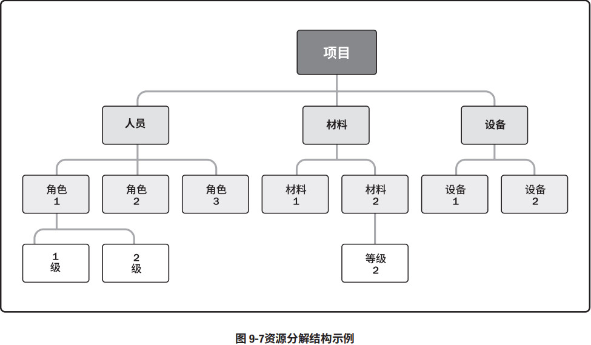
9.2.3.4 项目文件更新
可在本过程更新的项目文件包括（但不限于）：- 活动属性。见 6.2.3.2 节。活动属性依据资源需求而更新。
- 假设日志。见 4.1.3.2 节。关于项目所需资源的类型和数量的假设条件，更新在假设日志中。此外，任何资源制约因素，包括集体劳资协议、连续工作时间、计划休假等，也应当相应更新。
- 经验教训登记册。见 11.2.3.1 节。能够有效和高效地估算资源的技术，以及有关那些无效或低效的技术信息，更新在经验教训登记册中。
9.3 获取资源
获取资源是获取项目所需的团队成员、设施、设备、材料、用品和其他资源的过程。本过程的主要作用是，概述和指导资源的选择，并将其分配给相应的活动。本过程应根据需要在整个项目期间定期开展。图 9-8 描述本过程的输入、工具与技术和输出。图 9-9 是本过程的数据流向图。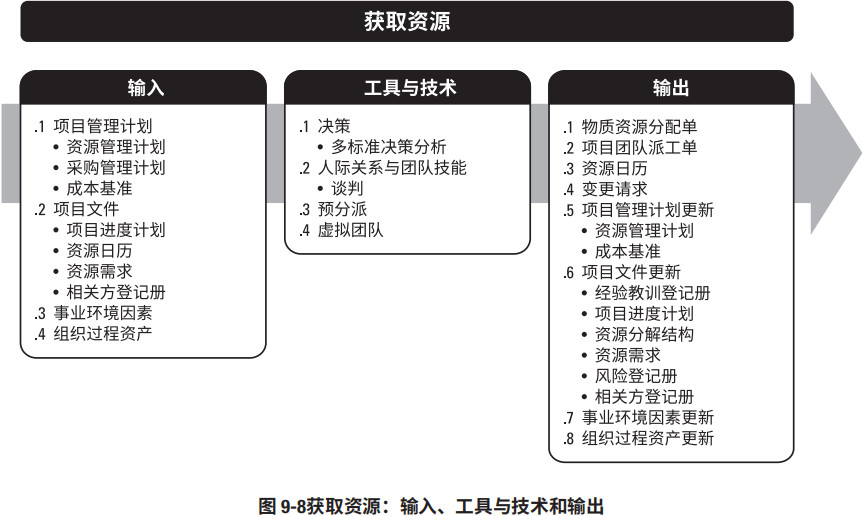
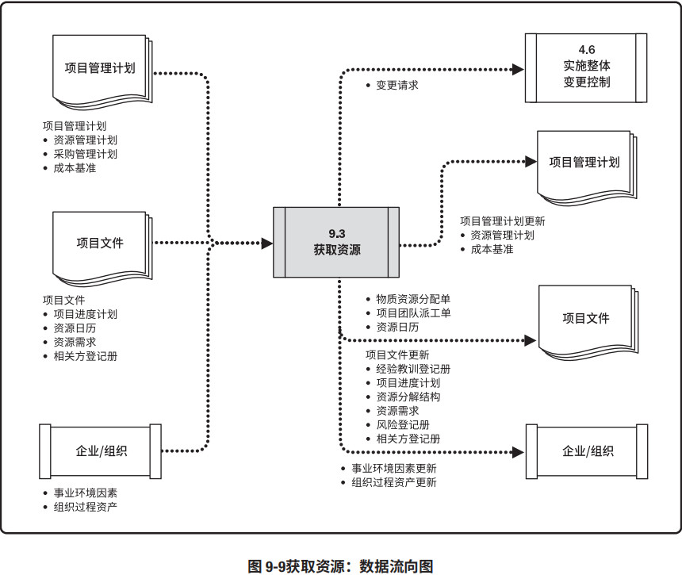
项目所需资源可能来自项目执行组织的内部或外部。内部资源由职能经理或资源经理负责获取（分配），外部资源则是通过采购过程获得。
因为集体劳资协议、分包商人员使用、矩阵型项目环境、内外部报告关系或其他原因，项目管理团队可能或可能不对资源选择有直接控制权。重要的是，在获取项目资源过程中应注意下列事项：
- 项目经理或项目团队应该进行有效谈判，并影响那些能为项目提供所需团队和实物资源的人员。
- 不能获得项目所需的资源时，可能会影响项目进度、预算、客户满意度、质量和风险；资源或人员能力不足会降低项目成功的概率，最坏的情况可能导致项目取消。
- 如因制约因素（如经济因素或其他项目对资源的占用）而无法获得所需团队资源，项目经理或项目团队可能不得不使用也许能力和成本不同的替代资源。在不违反法律、规章、强制性规定或其他具体标准的前提下可以使用替代资源。
在项目规划阶段，应该对上述因素加以考虑并做出适当安排。项目经理或项目管理团队应该在项目进度计划、项目预算、项目风险计划、项目质量计划、培训计划及其他相关项目管理计划中，说明缺少所需资源的后果。
9.3.1 获取资源：输入
9.3.1.1 项目管理计划
见 4.2.3.1 节。项目管理计划组件包括（但不限于）：- 资源管理计划。见 9.1.3.1 节。资源管理计划为如何获取项目资源提供指南。
- 采购管理计划。见 12.1.3.1 节。采购管理计划提供了关于将从项目外部获取的资源的信息，包括如何将采购与其他项目工作整合起来以及涉及资源采购工作的相关方。
- 成本基准。见 7.3.3.1 节。成本基准提供了项目活动的总体预算。
9.3.1.2 项目文件
可作为本过程输入的项目文件包括（但不限于）：- 项目进度计划。见 6.5.3.2 节。项目进度计划展示了各项活动及其开始和结束日期，有助于确定需要提供和获取资源的时间。
- 资源日历。见 9.3.3.3 节。资源日历记录了每个项目资源在项目中的可用时间段。编制出可靠的进度计划，应依据对各个资源的可用性和时间限制（包括时区、工作时间、休假时间、当地节假日、维护计划和在其他项目的工作时间）的良好了解。资源日历需要在整个项目过程中渐进明细和更新。资源日历是本过程的输出，在重复本过程时随时可用。
- 资源需求。见 9.2.3.1 节。资源需求识别了需要获取的资源。
- 相关方登记册。见 13.1.3.1 节。相关方登记册可能会发现相关方对项目特定资源的需求或期望，在获取资源过程中应加以考虑。
9.3.1.3 事业环境因素
能够影响获取资源过程的事业环境因素包括（但不限于）：- 现有组织资源信息，包括可用性、能力水平、以及有关团队资源和资源成本的以往经验；
- 市场条件；
- 组织结构；
- 地理位置。
9.3.1.4 组织过程资产
能够影响获取资源过程的组织过程资产包括（但不限于）：- 有关项目资源的采购、配置和分配的政策和程序；
- 历史信息和经验教训知识库。
9.3.2 获取资源：工具与技术
9.3.2.1 决策
见 5.2.2.4 节。适用于获取资源过程的决策技术包括（但不限于）多标准决策分析（见 8.1.2.4 节）。 选择标准常用于选择项目的实物资源或项目团队。使用多标准决策分析工具制定出标准，用于对潜在资源进行评级或打分（例如，在内部和外部团队资源之间进行选择）。根据标准的相对重要性对标准进行加权，加权值可能因资源类型的不同而发生变化。可使用的选择标准包括：- 可用性。确认资源能否在项目所需时段内为项目所用。
- 成本。确认增加资源的成本是否在规定的预算内。
- 能力。确认团队成员是否提供了项目所需的能力。
有些选择标准对团队资源来说是独特的，包括：
- 经验。确认团队成员具备项目成功所需的相关经验。
- 知识。团队成员是否掌握关于客户、执行过的类似项目和项目环境细节的相关知识。
- 技能。确认团队成员拥有使用项目工具的相关技能。
- 态度。团队成员能否与他人协同工作，以形成有凝聚力的团队。
- 国际因素。团队成员的位置、时区和沟通能力。
9.3.2.2 人际关系与团队技能
适用于本过程的人际关系与团队技能包括（但不限于）谈判。见 12.2.2.5 节。很多项目需要针对所 需资源进行谈判，项目管理团队需要与下列各方谈判：- 职能经理。确保项目在要求的时限内获得最佳资源，直到完成职责。
- 执行组织中的其他项目管理团队。合理分配稀缺或特殊资源。
- 外部组织和供应商。提供合适的、稀缺的、特殊的、合格的、经认证的或其他特殊的团队或实物资源。特别需要注意与外部谈判有关的政策、惯例、流程、指南、法律及其他标准。
在资源分配谈判中，项目管理团队影响他人的能力很重要，如同在组织中的政治能力一样重要。例如，说服职能经理，让他/她看到项目具有良好的前景，会影响他/她把最佳资源分配给这个项目而不是竞争项目。
9.3.2.3 预分派
预分派指事先确定项目的实物或团队资源，可在下列情况下发生：在竞标过程中承诺分派特定人员进行项目工作；项目取决于特定人员的专有技能；在完成资源管理计划的前期工作之前，制定项目章程过程或其他过程已经指定了某些团队成员的工作分派。9.3.2.4 虚拟团队
虚拟团队的使用为招募项目团队成员提供了新的可能性。虚拟团队可定义为具有共同目标、在完成角色任务的过程中很少或没有时间面对面工作的一群人。现代沟通技术（如电子邮件、电话会议、社交媒体、网络会议和视频会议等）使虚拟团队成为可行。虚拟团队模式使人们有可能：- 在组织内部地处不同地理位置的员工之间组建团队；
- 为项目团队增加特殊技能，即使相应的专家不在同一地理区域；
- 将在家办公的员工纳入团队；
- 在工作班次、工作小时或工作日不同的员工之间组建团队；
- 将行动不便者或残疾人纳入团队；
- 执行那些原本会因差旅费用过高而被搁置或取消的项目；
- 节省员工所需的办公室和所有实物设备的开支。
在虚拟团队的环境中，沟通规划变得日益重要。可能需要花更多时间，来设定明确的期望、促进沟通、制定冲突解决方法、召集人员参与决策、理解文化差异，以及共享成功喜悦。
9.3.3 获取资源：输出
9.3.3.1 实物资源分配单
实物资源分配单记录了项目将使用的材料、设备、用品、地点和其他实物资源。9.3.3.2 项目团队派工单
项目团队派工单记录了团队成员及其在项目中的角色和职责，可包括项目团队名录，还需要把人员姓名插入项目管理计划的其他部分，如项目组织图和进度计划。9.3.3.3 资源日历
资源日历识别了每种具体资源可用时的工作日、班次、正常营业的上下班时间、周末和公共假期。在规划活动期间，潜在的可用资源信息（如团队资源、设备和材料）用于估算资源可用性。资源日历规定了在项目期间确定的团队和实物资源何时可用、可用多久。这些信息可以在活动或项目层面建立，这考虑了诸如资源经验和/或技能水平以及不同地理位置等属性。9.3.3.4 变更请求
见 4.3.3.4 节。如果获取资源过程中出现变更请求（例如影响了进度），或者推荐措施、纠正措施或预防措施影响了项目管理计划的任何组成部分或项目文件，项目经理应提交变更请求，且应该通过实施整体变更控制过程（见 4.6 节）对变更请求进行审查和处理。9.3.3.5 项目管理计划更新
项目管理计划的任何变更都以变更请求的形式提出，且通过组织的变更控制过程进行处理。开展本过程可能导致项目管理计划更新的内容包括（但不限于）：- 资源管理计划。见 9.1.3.1 节。更新资源管理计划，以反映获取项目资源的实际经验，包括在项目早期获取资源的经验教训，这些经验会影响项目后期的资源获取过程。
- 成本基准。见 7.3.3.1 节。在项目资源采购期间，成本基准可能发生变更。
9.3.3.6 项目文件更新
可在本过程更新的项目文件包括（但不限于）：- 经验教训登记册。见 4.4.3.1 节。项目中遇到的挑战、本可以规避这些挑战的方法，以及良好的资源获取方式更新在经验教训登记册中。
- 项目进度计划。见 6.5.3.2 节。所需资源的可用性可能会导致项目进度的变更。
- 资源分解结构。见 9.2.3.3 节。在本过程中获取的资源应记录到资源分解结构中。
- 资源需求。见 9.2.3.1 节。可更新资源需求文件，以反映获取的项目资源。
- 风险登记册。见 11.2.3.1 节。本过程中识别的新风险记录在风险登记册中，并通过风险管理过程进行管理。
- 相关方登记册。见 13.1.3.1 节。增加的任何新的相关方，以及在本过程中获得的有关现有相关方的新信息更新在相关方登记册中。
9.3.3.7 事业环境因素更新
需要更新的事业环境因素包括（但不限于）：- 组织内资源的可用性；
- 组织已使用的消耗资源的数量。
9.3.3.8 组织过程资产更新
作为获取资源过程的结果，需要更新的组织过程资产包括（但不限于）有关采购、配置和分配资源的文件。9.4 建设团队
建设团队是提高工作能力，促进团队成员互动，改善团队整体氛围，以提高项目绩效的过程。本过程的主要作用是，改进团队协作、增强人际关系技能、激励员工、减少摩擦以及提升整体项目绩效。本过程需要在整个项目期间开展。图 9-10 描述本过程的输入、工具与技术和输出。图 9-11 是本过程的数据流向图。
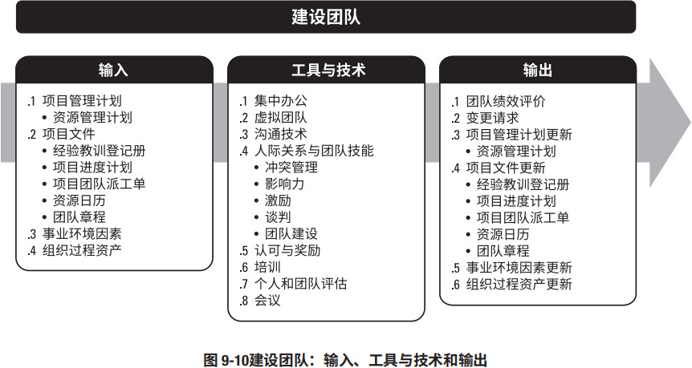
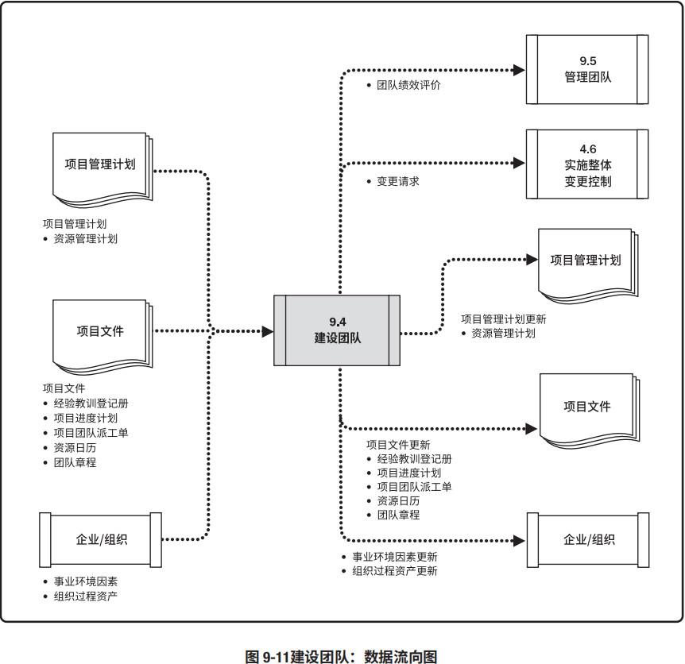
项目经理应该能够定义、建立、维护、激励、领导和鼓舞项目团队，使团队高效运行，并实现项目目标。团队协作是项目成功的关键因素，而建设高效的项目团队是项目经理的主要职责之一。项目经理应创建一个能促进团队协作的环境，并通过给予挑战与机会、提供及时反馈与所需支持，以及认可与奖励优秀绩效，不断激励团队。通过以下行为可以实现团队的高效运行：
- 使用开放与有效的沟通；
- 创造团队建设机遇；
- 建立团队成员间的信任；
- 以建设性方式管理冲突；
- 鼓励合作型的问题解决方法；
- 鼓励合作型的决策方法。
项目经理在全球化环境和富有文化多样性的项目中工作：团队成员经常来自不同的行业，讲不同的语言，有时甚至会在工作中使用一种特别的“团队语言”或文化规范，而不是使用他们的母语；项目管理团队应该利用文化差异，在整个项目生命周期中致力于发展和维护项目团队，并促进在相互信任的氛围中充分协作；通过建设项目团队，可以改进人际技巧、技术能力、团队环境及项目绩效。在整个项目生命周期中，团队成员之间都要保持明确、及时、有效（包括效果和效率两个方面）的沟通。建设项目团队的目标包括（但不限于）：
- 提高团队成员的知识和技能，以提高他们完成项目可交付成果的能力，并降低成本、缩短工期和提高质量；
- 提高团队成员之间的信任和认同感，以提高士气、减少冲突和增进团队协作；
- 创建富有生气、凝聚力和协作性的团队文化，从而：（1）提高个人和团队生产率，振奋团队精神，促进团队合作；（2）促进团队成员之间的交叉培训和辅导，以分享知识和经验；
- 提高团队参与决策的能力，使他们承担起对解决方案的责任，从而提高团队的生产效率，获得更有效和高效的成果。
有一种关于团队发展的模型叫塔克曼阶梯理论 [19，20]，其中包括团队建设通常要经过的五个阶段。尽管这些阶段通常按顺序进行，然而，团队停滞在某个阶段或退回到较早阶段的情况也并非罕见；而如果团队成员曾经共事过，项目团队建设也可跳过某个阶段。
- 形成阶段。在本阶段，团队成员相互认识，并了解项目情况及他们在项目中的正式角色与职责。在这一阶段，团队成员倾向于相互独立，不一定开诚布公。
- 震荡阶段。在本阶段，团队开始从事项目工作、制定技术决策和讨论项目管理方法。如果团队成员不能用合作和开放的态度对待不同观点和意见，团队环境可能变得事与愿违。
- 规范阶段。在规范阶段，团队成员开始协同工作，并调整各自的工作习惯和行为来支持团队，团队成员会学习相互信任。
- 成熟阶段。进入这一阶段后，团队就像一个组织有序的单位那样工作，团队成员之间相互依靠，平稳高效地解决问题。
- 解散阶段。在解散阶段，团队完成所有工作，团队成员离开项目。通常在项目可交付成果完成之后，或者，在结束项目或阶段过程中，释放人员，解散团队。
某个阶段持续时间的长短，取决于团队活力、团队规模和团队领导力。项目经理应该对团队活力有较好的理解，以便有效地带领团队经历所有阶段。
9.4.1 建设团队：输入
9.4.1.1 项目管理计划
见 4.2.3.1 节。项目管理计划组件包括（但不限于）资源管理计划。见 9.1.3.1 节，资源管理计划为如何通过团队绩效评价和其他形式的团队管理活动，为项目团队成员提供奖励、提出反馈、增加培训或采取惩罚措施提供了指南。资源管理计划可能包括团队绩效评价标准。9.4.1.2 项目文件
可作为本过程输入的项目文件包括（但不限于）：- 经验教训登记册。见 4.4.3.1 节。项目早期与团队建设有关的经验教训可以运用到项目后期阶段，以提高团队绩效。
- 项目进度计划。见 6.5.3.2 节。项目进度计划定义了如何以及何时为项目团队提供培训，以培养不同阶段所需的能力，并根据项目执行期间的任何差异（如有）识别需要的团队建设策略。
- 项目团队派工单。见 9.3.3.1 节。项目团队派工单识别了团队成员的角色与职责。
- 资源日历。见 9.2.1.2 节。资源日历定义了项目团队成员何时能参与团队建设活动，有助于说明团队在整个项目期间的可用性。
- 团队章程。见 9.1.3.2 节。团队章程包含团队工作指南。团队价值观和工作指南为描述团队的合作方式提供了架构。
9.4.1.3 事业环境因素
能够影响建设团队过程的事业环境因素包括（但不限于）：- 有关雇用和解雇的人力资源管理政策、员工绩效审查、员工发展与培训记录，以及认可与奖励；
- 团队成员的技能、能力和特定知识；
- 团队成员的地理分布。
9.4.1.4 组织过程资产
能够影响建设团队过程的组织过程资产包括（但不限于）历史信息和经验教训知识库。9.4.2 建设团队：工具与技术
9.4.2.1 集中办公
集中办公是指把许多或全部最活跃的项目团队成员安排在同一个物理地点工作，以增强团队工作能力。集中办公既可以是临时的（如仅在项目特别重要的时期），也可以贯穿整个项目。实施集中办公策略，可借助团队会议室、张贴进度计划的场所，以及其他能增进沟通和集体感的设施。9.4.2.2 虚拟团队
虚拟团队的使用能带来很多好处，例如，使用更多技术熟练的资源、降低成本、减少出差及搬迁费用，以及拉近团队成员与供应商、客户或其他重要相关方的距离。虚拟团队可以利用技术来营造在线团队环境，以供团队存储文件、使用在线对话来讨论问题，以及保存团队日历。9.4.2.3 沟通技术
见 10.1.2.3 节。在解决集中办公或虚拟团队的团队建设问题方面，沟通技术至关重要。它有助于为集中办公团队营造一个融洽的环境，促进虚拟团队（尤其是团队成员分散在不同时区的团队）更好地相互理解。可采用的沟通技术包括：- 共享门户。共享信息库（例如网站、协作软件或内部网）对虚拟项目团队很有帮助。
- 视频会议。视频会议是一种可有效地与虚拟团队沟通重要技术。
- 音频会议。音频会议有助于与虚拟团队建立融洽的相互信任的关系。
- 电子邮件/聊天软件。使用电子邮件和聊天软件定期沟通也是一种有效的方式。
9.4.2.4 人际关系与团队技能
适用于本过程的人际关系与团队技能包括（但不限于）：- 冲突管理。见 9.5.2.1 节。项目经理应及时地以建设性方式解决冲突，从而创建高绩效团队。
- 影响力。见 9.5.2.1 节。本过程的影响力技能收集相关的关键信息，在维护相互信任的关系时，来解决重要问题并达成一致意见。
- 激励。激励为某人采取行动提供了理由。提高团队参与决策的能力并鼓励他们独立工作。
- 谈判。见 12.2.2.5 节。团队成员之间的谈判旨在就项目需求达成共识。谈判有助于在团队成员之间建立融洽的相互信任的关系。
- 团队建设。团队建设是通过举办各种活动，强化团队的社交关系，打造积极合作的工作环境。团队建设活动既可以是状态审查会上的五分钟议程，也可以是为改善人际关系而设计的、在非工作场所专门举办的专业提升活动。团队建设活动旨在帮助各团队成员更加有效地协同工作。如果团队成员的工作地点相隔甚远，无法进行面对面接触，就特别需要有效的团队建设策略。非正式的沟通和活动有助于建立信任和良好的工作关系。团队建设在项目前期必不可少，但它更是个持续的过程。项目环境的变化不可避免，要有效应对这些变化，就需要持续不断地开展团队建设。项目经理应该持续地监督团队机能和绩效，确定是否需要采取措施来预防或纠正各种团队问题。
9.4.2.5 认可与奖励
在建设项目团队过程中，需要对成员的优良行为给予认可与奖励。最初的奖励计划是在规划资源管理过程中编制的，只有能满足被奖励者的某个重要需求的奖励，才是有效的奖励。在管理项目团队过程中，可以正式或非正式的方式做出奖励决定，但在决定认可与奖励时，应考虑文化差异。当人们感受到自己在组织中的价值，并且可以通过获得奖励来体现这种价值，他们就会受到激励。通常，金钱是奖励制度中的有形奖励，然而也存在各种同样有效、甚至更加有效的无形奖励。大多数项目团队成员会因得到成长机会、获得成就感、得到赞赏以及用专业技能迎接新挑战，而受到激励。项目经理应该在整个项目生命周期中尽可能地给予表彰，而不是等到项目完成时。
9.4.2.6 培训
培训包括旨在提高项目团队成员能力的全部活动，可以是正式或非正式的，方式包括课堂培训、在线培训、计算机辅助培训、在岗培训（由其他项目团队成员提供）、辅导及训练。如果项目团队成员缺乏必要的管理或技术技能，可以把对这种技能的培养作为项目工作的一部分。项目经理应该按资源管理计划中的安排来实施预定的培训，也应该根据管理项目团队过程中的观察、交谈和项目绩效评估的结果，来开展必要的计划外培训，培训成本通常应该包括在项目预算中，或者如果增加的技能有利于未来的项目，则由执行组织承担。培训可以由内部或外部培训师来执行。9.4.2.7 个人和团队评估
个人和团队评估工具能让项目经理和项目团队洞察成员的优势和劣势。这些工具可帮助项目经理评估团队成员的偏好和愿望、团队成员如何处理和整理信息、如何制定决策，以及团队成员如何与他人打交道。有各种可用的工具，如态度调查、专项评估、结构化访谈、能力测试及焦点小组。这些工具有利于增进团队成员间的理解、信任、承诺和沟通，在整个项目期间不断提高团队成效。9.4.2.8 会议
可以用会议来讨论和解决有关团队建设的问题，参会者包括项目经理和项目团队。会议类型包括（但不限于）：项目说明会、团队建设会议，以及团队发展会议。9.4.3 建设团队：输出
9.4.3.1 团队绩效评价
随着项目团队建设工作（如培训、团队建设和集中办公等）的开展，项目管理团队应该对项目团队的有效性进行正式或非正式的评价。有效的团队建设策略和活动可以提高团队绩效，从而提高实现项目目标的可能性。评价团队有效性的指标可包括：
- 个人技能的改进，从而使成员更有效地完成工作任务；
- 团队能力的改进，从而使团队成员更好地开展工作；
- 团队成员离职率的降低；
- 团队凝聚力的加强，从而使团队成员公开分享信息和经验，并互相帮助来提高项目绩效。
通过对团队整体绩效的评价，项目管理团队能够识别出所需的特殊培训、教练、辅导、协助或改变，以提高团队绩效。项目管理团队也应该识别出合适或所需的资源，以执行和实现在绩效评价过程中提出的改进建议。
9.4.3.2 变更请求
见 4.3.3.4 节。如果建设团队过程中出现变更请求，或者推荐的纠正措施或预防措施影响了项目管理计划的任何组成部分或项目文件，项目经理应提交变更请求并遵循 4.6 节定义的实施整体变更控制过程。9.4.3.3 项目管理计划更新
项目管理计划的任何变更都以变更请求的形式提出，且通过组织的变更控制过程进行处理。可能需要变更的项目管理计划组成部分包括（但不限于）资源管理计划，见 9.1.3.1 节。9.4.3.4 项目文件更新
可在本过程更新的项目文件包括（但不限于）：- 经验教训登记册。见 4.4.3.1 节。项目中遇到的挑战、本可以规避这些挑战的方法，以及良好的团队建设方式更新经验教训登记册中。
- 项目进度计划。见 6.5.3.2 节。项目团队建设活动可能会导致项目进度的变更。
- 项目团队派工单。见 9.3.3.1 节。如果团队建设导致已商定的派工单出现变更，应对项目团队派工单做出相应的更新。
- 资源日历。见 9.2.1.2 节。更新资源日历，以反映项目资源的可用性。
- 团队章程。见 9.1.3.2 节。更新团队章程，以反映因团队建设对团队工作指南做出的变更。
9.4.3.5 事业环境因素更新
作为建设项目团队过程的结果，需要更新的事业环境因素包括（但不限于）：- 员工发展计划的记录；
- 技能评估。
9.4.3.6 组织过程资产更新
作为建设团队过程的结果，需要更新的组织过程资产包括（但不限于）：- 培训需求；
- 人事评测。
9.5 管理团队
管理团队是跟踪团队成员工作表现，提供反馈，解决问题并管理团队变更，以优化项目绩效的过程。本过程的主要作用是，影响团队行为、管理冲突以及解决问题。本过程需要在整个项目期间开展。图 9-12 描述本过程的输入、工具与技术和输出。图 9-13 是本过程的数据流向图。
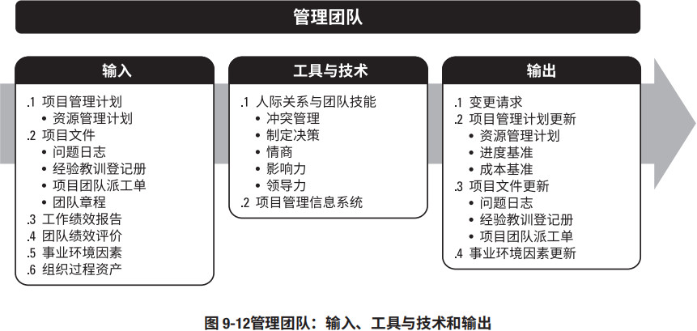
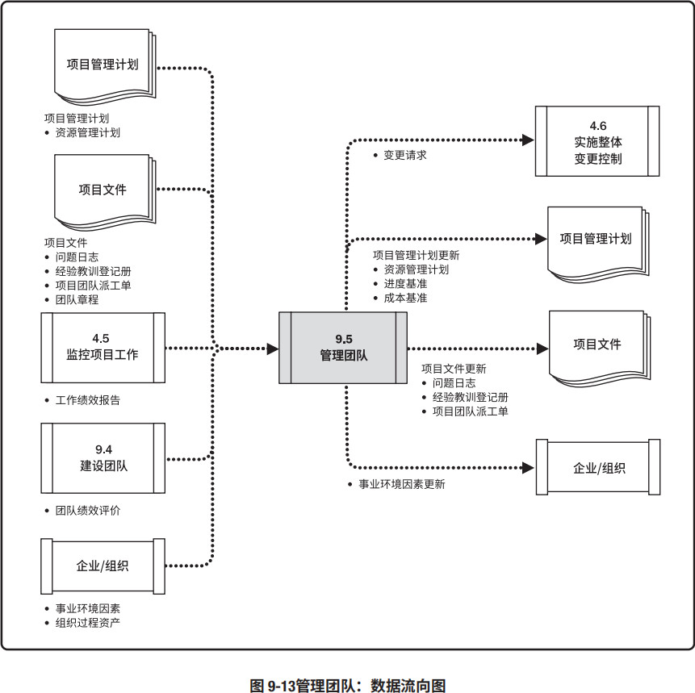
管理项目团队需要借助多方面的管理和领导力技能，来促进团队协作，整合团队成员的工作，从而创建高效团队。进行团队管理，需要综合运用各种技能，特别是沟通、冲突管理、谈判和领导技能。项目经理应该向团队成员分配富有挑战性的任务，并对优秀绩效进行表彰。
项目经理应留意团队成员是否有意愿和能力完成工作，然后相应地调整管理和领导力方式。相对那些已展现出能力和有经验的团队成员，技术能力较低的团队成员更需要强化监督。
9.5.1 管理团队：输入
9.5.1.1 项目管理计划
见 4.2.3.1 节。项目管理计划组件包括（但不限于）资源管理计划。见 9.1.3.1 节，资源管理计划为如何管理和最终遣散项目团队资源提供指南。9.5.1.2 项目文件
可作为本过程输入的项目文件包括（但不限于）：- 问题日志。见 4.3.3.3 节。在管理项目团队过程中，总会出现各种问题。此时，可用问题日志记录由谁负责在目标日期内解决特定问题，并监督解决情况。
- 经验教训登记册。见 4.4.3.1 节。项目早期的经验教训可以运用到项目后期阶段，以提高团队管理的效率与效果。
- 项目团队派工单。见 9.3.3.1 节。项目团队派工单识别了团队成员的角色与职责。
- 团队章程。见 9.1.3.2 节。团队章程为团队应如何决策、举行会议和解决冲突提供指南。
9.5.1.3 工作绩效报告
见 4.5.3.1 节。工作绩效报告是为制定决策、采取行动或引起关注所形成的实物或电子工作绩效信息，它包括从进度控制、成本控制、质量控制和范围确认中得到的结果，有助于项目团队管理。绩效报告和相关预测报告中的信息，有助于确定未来的团队资源需求，认可与奖励，以及更新资源管理计划。9.5.1.4 团队绩效评价
见 9.4.3.1 节。项目管理团队应该持续地对项目团队绩效进行正式或非正式的评价。不断地评价项目团队绩效，有助于采取措施解决问题、调整沟通方式、解决冲突和改进团队互动。9.5.1.5 事业环境因素
能够影响管理团队过程的事业环境因素包括（但不限于）人力资源管理政策。9.5.1.6 组织过程资产
能够影响管理团队过程的组织过程资产包括（但不限于）：- 嘉奖证书；
- 公司制服；
- 组织中其他的额外待遇。
9.5.2 管理团队：工具与技术
9.5.2.1 人际关系与团队技能
适用于本过程的人际关系与团队技能包括（但不限于）：冲突管理
在项目环境中，冲突不可避免。冲突的来源包括资源稀缺、进度优先级排序和个人工作风格差异等。采用团队基本规则、团队规范及成熟的项目管理实践（如沟通规划和角色定义），可以减少冲突的数量。
成功的冲突管理可提高生产力，改进工作关系。同时，如果管理得当，意见分歧有利于提高创造力和改进决策。假如意见分歧成为负面因素，应该首先由项目团队成员负责解决；如果冲突升级，项目经理应提供协助，促成满意的解决方案，采用直接和合作的方式，尽早并且通常在私下处理冲突。如果破坏性冲突继续存在，则可使用正式程序，包括采取惩戒措施。
项目经理解决冲突的能力往往决定其管理项目团队的成败。不同的项目经理可能采用不同的解决冲突方法。影响冲突解决方法的因素包括：
- 冲突的重要性与激烈程度；
- 解决冲突的紧迫性；
- 涉及冲突的人员的相对权力；
- 维持良好关系的重要性；
- 永久或暂时解决冲突的动机。
有五种常用的冲突解决方法，每种技巧都有各自的作用和用途。
- 撤退/回避。从实际或潜在冲突中退出，将问题推迟到准备充分的时候，或者将问题推给其他人员解决。
- 缓和/包容。强调一致而非差异；为维持和谐与关系而退让一步，考虑其他方的需要。
- 妥协/调解。为了暂时或部分解决冲突，寻找能让各方都在一定程度上满意的方案，但这种方法有时会导致“双输”局面。
- 强迫/命令。以牺牲其他方为代价，推行某一方的观点；只提供赢 — 输方案。通常是利用权力来强行解决紧急问题，这种方法通常会导致“赢输”局面。
- 合作/解决问题。综合考虑不同的观点和意见，采用合作的态度和开放式对话引导各方达成共识和承诺，这种方法可以带来双赢局面。
制定决策
这种情况下，决策包括谈判能力以及影响组织与项目管理团队的能力，而不是决策工具集所描述的一系列工具。进行有效决策需要：
- 着眼于所要达到的目标；
- 遵循决策流程；
- 研究环境因素；
- 分析可用信息；
- 激发团队创造力；
- 理解风险。
情商
情商指识别、评估和管理个人情绪、他人情绪及团体情绪的能力。项目管理团队能用情商来了解、评估及控制项目团队成员的情绪，预测团队成员的行为，确认团队成员的关注点及跟踪团队成员的问题，来达到减轻压力、加强合作的目的。
影响力
在矩阵环境中，项目经理对团队成员通常没有或仅有很小的命令职权，所以他们适时影响相关方的能力，对保证项目成功非常关键。影响力主要体现在如下各方面：
- 说服他人；
- 清晰表达观点和立场；
- 积极且有效的倾听；
- 了解并综合考虑各种观点；
- 收集相关信息，在维护相互信任的关系下，解决问题并达成一致意见。
领导力
成功的项目需要强有力的领导技能，领导力是领导团队、激励团队做好本质工作的能力。它包括各种不同的技巧、能力和行动。且领导力在项目生命周期中的所有阶段都很重要。有多种领导力理论，定义了适用于不同情形或团队的领导风格。领导力对沟通愿景及鼓舞项目团队高效工作十分重要。
9.5.2.2 项目管理信息系统 (PMIS)
见 4.3.2.2 节。项目管理信息系统可包括资源管理或进度计划软件，可用于在各个项目活动中管理和协调团队成员。9.5.3 管理团队：输出
9.5.3.1 变更请求
见 4.3.3.4 节。如果管理团队过程中出现变更请求，或者推荐措施、纠正措施或预防措施影响了项目管理计划的任何组成部分或项目文件，项目经理应提交变更请求。并通过实施整体变更控制过程（见 4.6 节）对变更请求进行审查和处理。例如，人员配备变更，无论是自主选择还是由不可控事件造成，都会干扰项目团队，这种干扰可能导致进度落后或预算超支。人员配备变更包括转派人员、外包部分工作，或替换离职人员。
9.5.3.2 项目管理计划更新
项目管理计划的任何变更都以变更请求的形式提出，且通过组织的变更控制过程进行处理。可能需要变更的项目管理计划组成部分包括（但不限于）：- 资源管理计划。见 9.1.3.1 节。资源管理计划根据实际的项目团队管理经验更新。
- 进度基准。见 6.5.3.1 节。可能需要更改项目进度，以反映团队的执行方式。
- 成本基准。见 7.3.3.1 节。可能需要更改项目成本基准，以反映团队的执行方式。
9.5.3.3 项目文件更新
可在本过程更新的项目文件包括（但不限于）：- 问题日志。见 4.3.3.3 节。在本过程中提出的新问题可以记录到问题日志中。
- 经验教训登记册。见 4.4.3.1 节。更新经验教训登记册，记录在项目中遇到的挑战、本应可以规避这些挑战的方法，以及良好的团队管理方式。
- 项目团队派工单。见 9.3.3.1 节。如果需要对团队做出变更，则在项目团队派工单中记录这些变更。
9.5.3.4 事业环境因素更新
作为管理团队过程的结果，需要更新的事业环境因素包括（但不限于）：- 对组织绩效评价的输入；
- 个人技能。
9.6 控制资源
控制资源是确保按计划为项目分配实物资源，以及根据资源使用计划监督资源实际使用情况，并采取必要纠正措施的过程。本过程的主要作用是，确保所分配的资源适时适地可用于项目，且在不再需要时被释放。本过程需要在整个项目期间开展。图 9-14 描述了本过程的输入和输出。图 9-15是本过程的数据流向图。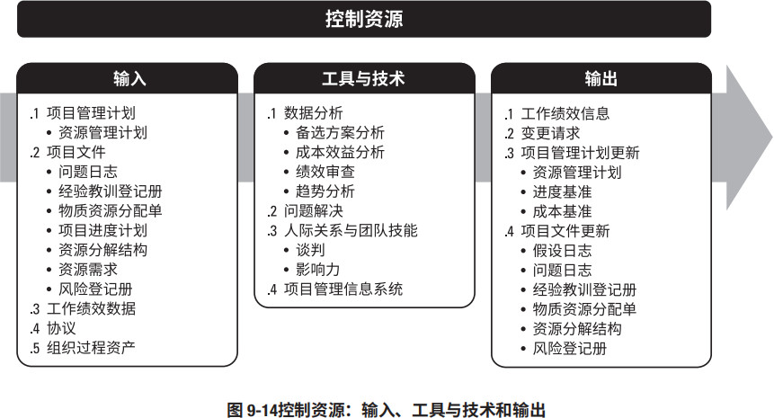
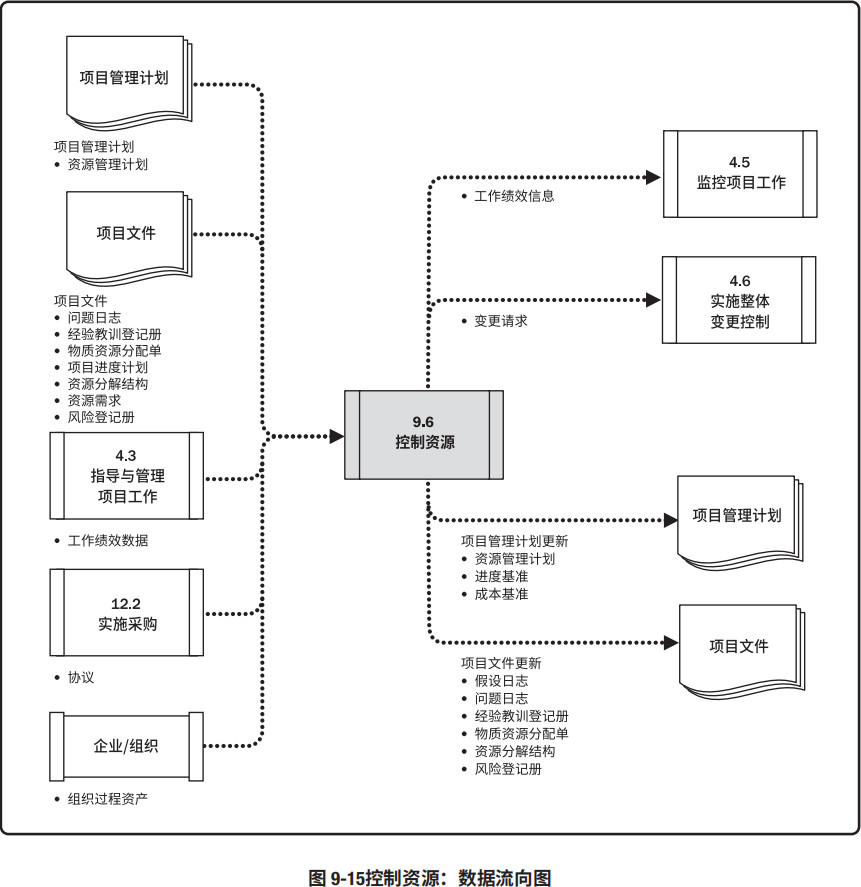
应在所有项目阶段和整个项目生命周期期间持续开展控制资源过程，且适时、适地和适量地分配和释放资源，使项目能够持续进行。控制资源过程关注实物资源，例如设备、材料、设施和基础设施。管理团队过程关注团队成员。
本节讨论的控制资源技术是项目中最常用的，而在特定项目或应用领域中，还可采用许多其他控制资源技术。
更新资源分配时，需要了解已使用的资源和还需要获取的资源。为此，应审查至今为止的资源使用情况。控制资源过程关注：
- 监督资源支出；
- 及时识别和处理资源缺乏/剩余情况；
- 确保根据计划和项目需求使用和释放资源；
- 在出现资源相关问题时通知相应的相关方；
- 影响可以导致资源使用变更的因素；
- 在变更实际发生时对其进行管理。
进度基准或成本基准的任何变更，都必须经过实施整体变更控制过程的审批（见 4.6 节）。
9.6.1 控制资源：输入
9.6.1.1 项目管理计划
见 4.2.3.1 节。项目管理计划组件包括（但不限于）资源管理计划。见 9.1.3.1 节，资源管理计划为如何使用、控制和最终释放实物资源提供指南。9.6.1.2 项目文件
可作为本过程输入的项目文件包括（但不限于）：- 问题日志。见 4.3.3.3 节。问题日志用于识别有关缺乏资源、原材料供应延迟，或低等级原材料等问题。
- 经验教训登记册。见 4.4.3.1 节。在项目早期获得的经验教训可以运用到后期阶段，以改进实物资源控制。
- 实物资源分配。见 9.3.3.1 节。实物资源分配描述了资源的预期使用情况以及资源的详细信息，例如类型、数量、地点以及属于组织内部资源还是外购资源。
- 项目进度计划。见 6.5.3.2 节。项目进度计划展示了项目在何时何地需要哪些资源。
- 资源分解结构。见 9.2.3.3 节。资源分解结构为项目过程中需要替换或重新获取资源的情况提供了参考。
- 资源需求。见 9.2.3.1 节。资源需求识别了项目所需的材料、设备、用品和其他资源。
- 风险登记册。见 11.2.3.1 节。风险登记册识别了可能会影响设备、材料或用品的单个风险。
9.6.1.3 工作绩效数据
见 4.3.3.2 节。工作绩效数据包含有关项目状态的数据，例如已使用的资源的数量和类型。9.6.1.4 协议
见 12.2.3.2 节。在项目中签署的协议是获取组织外部资源的依据，应在需要新的和未规划的资源时，或在当前资源出现问题时，在协议里定义相关程序。9.6.1.5 组织过程资产
能够影响控制资源过程的组织过程资产包括（但不限于）：- 有关资源控制和分配的政策；
- 执行组织内用于解决问题的升级程序；
- 经验教训知识库，其中包含以往类似项目的信息。
9.6.2 控制资源：工具与技术
9.6.2.1 数据分析
适用于本过程的数据分析技术包括（但不限于）：- 备选方案分析。见 9.2.2.5 节。备选方案分析有助于选择最佳解决方案以纠正资源使用偏差，可以将加班和增加团队资源等备选方案与延期交付或阶段性交付相比较，以权衡利弊。
- 成本效益分析。见 8.1.2.3 节。成本效益分析有助于在项目成本出现差异时确定最佳的纠正措施。
- 绩效审查。。绩效审查是测量、比较和分析计划的资源使用和实际资源使用的不同。分析成本和进度工作绩效信息有助于指出可能影响资源使用的问题。
- 趋势分析。见 4.5.2.2 节。在项目进展过程中，项目团队可能会使用趋势分析，基于当前绩效信息来确定未来项目阶段所需的资源。趋势分析检查项目绩效随时间的变化情况，可用于确定绩效是在改善还是在恶化。
9.6.2.2 问题解决
见 8.2.2.7 节。问题解决可能会用到一系列工具，有助于项目经理解决控制资源过程中出现的问题。问题可能来自组织内部（组织中另一部门使用的机器或基础设施未及时释放，因存储条件不当造成材料受损等）或来自组织外部（主要供应商破产或恶劣天气使资源受损）。项目经理应采取有条不紊的步骤来解决问题，包括：- 识别问题。明确问题。
- 定义问题。将问题分解为可管理的小问题。
- 调查。收集数据。
- 分析。找出问题的根本原因。
- 解决。从众多解决方案中选择最合适的一个。
- 检查解决方案。确认是否已解决问题。
9.6.2.3 人际关系与团队技能
人际关系与团队技能有时被称为“软技能”，属于个人能力。本过程使用的人际关系与团队技能包括：- 谈判。见 12.2.2.5 节。项目经理可能需要就增加实物资源、变更实物资源或资源相关成本进行谈判。
- 影响力。见 9.5.2.1 节。影响力有助于项目经理及时解决问题并获得所需资源。
9.6.2.4 项目管理信息系统 (PMIS)
见 4.3.2.2 节。项目管理信息系统可包括资源管理或进度计划软件，可用于监督资源的使用情况，帮助确保合适的资源适时适地用于合适的活动。9.6.3 控制资源：输出
9.6.3.1 工作绩效信息
见 4.5.1.3 节。工作绩效信息包括项目工作进展信息，这一信息将资源需求和资源分配与项目活动期间的资源使用相比较，从而发现需要处理的资源可用性方面的差异。9.6.3.2 变更请求
见 4.3.3.4 节。如果控制资源过程出现变更请求，或者推荐的纠正措施或预防措施影响了项目管理计划的任何组成部分或项目文件，项目经理应提交变更请求。并通过实施整体变更控制过程（见 4.6 节）对变更请求进行审查和处理。9.6.3.3 项目管理计划更新
项目管理计划的任何变更都以变更请求的形式提出，且通过组织的变更控制过程进行处理。可能需要变更的项目管理计划组成部分包括（但不限于）：- 资源管理计划。见 9.1.3.1 节。资源管理计划根据实际的项目资源管理经验更新。
- 进度基准。见 6.5.3.1 节。可能需要更新项目进度，以反映管理项目资源的方式。
- 成本基准。见 7.3.3.1 节。可能需要更新项目成本基准，以反映管理项目资源的方式。
9.6.3.4 项目文件更新
可在本过程更新的项目文件包括（但不限于）：- 假设日志。见 4.1.3.2 节。把关于设备、材料、用品和其他实物资源的新假设条件更新在假设日志中。
- 问题日志。见 4.3.3.3 节。在本过程中出现的新问题可以记录到问题日志中。
- 经验教训登记册。见 4.4.3.1 节。在经验教训登记册中更新有效管理资源物流、废料、使用偏差，以及应对资源偏差的纠正措施的技术。
- 实物资源分配单。见 9.3.3.1 节。实物资源分配单是动态的，会因可用性、项目、组织、环境或其他因素而发生变更。
- 资源分解结构。见 9.2.3.3 节。可能需要更新资源分解结构，以反映使用项目资源的方式。
- 风险登记册。见 11.2.3.1 节。关于资源可用性、利用或其他实物资源的风险更新风在险登记册中。